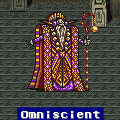
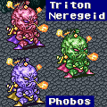
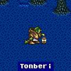

Story Line (9)
ค้นหาแผ่นจารึก
Solitary Island Temple
ไปยังวิหารโดดเดี่ยวที่อยู่บริเวณตอนกลางของแผนที่
แต่คราวนี้จะมีสะพานพาดผ่าน สามารถเข้าไปได้แล้ว
ภายในจะเจอ Boss : Gargoyle
เฝ้าอยู่เช่นเคย
วิหารนี้จะมีแผ่นจารึกอีกแผ่นหนึ่งซ่อนอยู่ ซึ่งถูกปกป้องโดยธาตุลม
ภายในวิหารจะเจอ Tote Avis ซึ่งมี HP สูงมาก
Tote Avis
Level : 47
HP : 33,090
หากขโมยจาก Tote Avis จะได้รับธนู Aviskill ซึ่งมีพลังโจมตีสูงมาก
หากยังไม่ได้เก็บ Learning Magic ที่เป็น Lx Magic เช่น
L2 Old, L3 Flare, L4 Quarter, L5 Doom
ไม่ได้สามารถเก็บได้จาก Ixecrator
Ixecrator
(Druid)
Level : 42
HP : 2,000
ด้านในสุดจะเจอแผ่นจารึก แต่จะมีลูกสมุนของ Exdeath เข้ามาขัดขวาง
Boss : Stalker

Level : 7
HP : 20,000
* Note : Stalker มีตัวจริงเพียงตัวเดียวเท่านั้น
ซึ่งมันจะเปลี่ยนตำแหน่งของตัวจริงไปเรื่อยๆ จึงต้องค้นหาให้เจอ
* Note : อย่าลืมเรียนรู้ Learning Magic Mind
Blast จาก Stalker ด้วย
เมื่อปราบได้จะได้รับแผ่นจารึก ซึ่งเมื่อเคลื่อนย้ายแผ่นจารึก
ประตูที่กั้น มหาเวทย์ดำ และขาว ที่หอคอย Fork จะถูกเปิด
และบนแผ่นจารึกมีข้อความเขียนไว้ด้วยว่า
การจะเอามหาเวทย์ทั้งสองนั้น ต้องทำพร้อมๆ กัน มิฉะนั้น หอคอยจะถล่ม
จุดมุ่งหมายต่อไปคือ หอคอย Fork ซึ่งตั้งอยู่ทางทิศตะวันตกเฉียงใต้ของแผนที่
ใกล้ๆ กับหมู่บ้าน Cresent
แต่ก่อนจะไป ให้กลับไปปราสาท Kuza เพื่อนำแผ่นจารึกไปปลดผนึกอาวุธศักดิ์สิทธิ์เสียก่อน
ซึ่งสามารถเลือกปลดผนึกอาวุธศักดิ์สิทธิ์ได้อีก 3 ชิ้น
Fork Tower
จากข้อมูลจากแผ่นจารึกที่ได้จาก Solitary Island Temple
จะต้องเอามหาเวทย์ทั้งสองในเวลาพร้อมๆ กัน
พวก Butz จึงต้องแยกออกเป็น 2 กลุ่ม
ทางวาร์ปด้านซ้ายมือ สำหรับกลุ่มนักเวทย์
ทางวาร์ปด้านขวามือ สำหรับกลุ่มนักรบ
เนื่องจากหอคอยทางด้านซ้าย หากใช้การโจมตีทางด้านกายภาพ
จะโดนสวนกลับด้วยเวทย์ Meteor
ส่วนหอคอยทางด้านขวามือ ไม่สามารถใช้เวทย์โจมตีได้
Boss หอคอยด้านขวามือ ปกป้องมหาเวทย์ขาว Holy
Boss : Minotauros
Level : ????
HP : 19,850
Absorb : Holy
การโจมตี Minotauros ต้องโจมตีทางด้านกายภาพเท่านั้น
อีกทั้งยังไม่สามารถใช้เวทย์มนต์ได้
และหากโจมตีด้วยดาบ Excalibur จะเป็นการฟื้นฟู HP ให้แก่ Minotauros
วิธีต่อสู้ง่ายๆ คือ
ใช้อาชีพ Knight และถือดาบดูด HP (Drain) และใส่ Ability X-Fight
ซึ่งหอคอยทางด้านขวานี้สามารถมาเพียงคนเดียวก็สู้ได้
เมื่อปราบ Minotauros ได้แล้ว ก่อนตายมันจะใช้มหาเวทย์ขาว Holy โจมตี แต่...
Minotauros มี MP ไม่เพียงพอ จึงไม่สามารถใช้ได้ : P
* Note : หากจำ Mini Boss ใน Pyramid ได้ Minotauros จะเป็นพี่ชายของมัน
^^
Boss หอคอยด้านซ้ายมือ ปกป้องมหาเวทย์ดำ Flare
Boss : Omiscient

Level : 53
HP : 16,999
Weakness : Wind
Omiscient จะใช้เวทย์มนต์เสริมความสามารถให้แก่ตัวมันเอง
แต่สามารถใช้ Dispel ลบล้างได้
หากโจมตี Omiscient ด้วยการโจมตีทางด้านกายภาพ
Omiscient จะใช้เวทย์ Return เพื่อเริ่มการต่อสู้ใหม่หมด
หากเรียก Carbunkle ออกมาป้องกัน จะสะท้อนเวทย์ของ Omiscient ได้
เมื่อปราบ Omiscient ได้ ก่อนตาย มันจะใช้มหาเวทย์ดำ Flare โจมตี
เมื่อสามารถเก็บมหาเวทย์ทั้งสองได้แล้ว หอคอยจะหายไป
และด้านล่างของหอคอยก็คือฐานเรือเหาะนั่นเอง
Ship Basement
นำเรือเหาะลงไปจอดในฐาน จะพบกับ Cid และ Mid จะช่วยต่อเติมเรือเหาะให้
ซึ่งตอนนี้จะสามารถนำเรือเหาะลงไปใต้น้ำได้แล้ว
เมื่อปรับปรุงเรือเหาะให้ลงไปใต้น้ำได้แล้ว จะมี Sub-Quest ให้ทำ ดังนี้
Sub-Quest "Information"
Sub-Quest "Gogo"
จุดมุ่งหมายต่อไปคือ รอยแยกใต้ทะเล
Great Trench
ลงไปใต้ทะเลทางด้านทิศตะวันออกจะมีรอยแยกใต้ทะเล
ภายในจะเจอ Boss : Gargoyle
เฝ้าอยู่เช่นเคย
ใต้รอยแยกนี้จะมีแผ่นจารึกอีกแผ่นหนึ่งซ่อนอยู่ ซึ่งถูกปกป้องโดยธาตุไฟ
ภายในรอยแยกนี้ ศัตรูจะเป็นพวกผีดิบ ซึ่งมีพลังป้องกันที่สูง
วิธีจัดการง่ายๆ ให้ใช้อาชีพ Bard และใช้เพลง Requiem
จะจัดการได้อย่างง่ายดาย
เก็บ Learning Magic 1 เวทย์ หากยังไม่ได้เก็บมาก่อนหน้านี้
Condemn จาก Unknow (ศัตรูที่เป็นโครงกระดูกห้อยลงมาจากด้านบน)
ลงไปด้านใต้จะเจอพวก Dwarf อาศัยอยู่ สามารถซื้อสินค้าได้จากพวกเขา
(สามารถซื้อสินค้าได้ 2 แบบ แนวนอนเป็นพวกอาวุธ, แนวตั้งเป็นพวกอุปกรณ์ป้องกัน)
Magic Lamp
Recharge
ลงมาด้านล่างจะมีบ่อน้ำ
ซึ่งหากพลังของ Magic Lamp อ่อนลง สามารถนำมาฟื้นฟูพลังได้ที่นี่
จากนั้นไปต่อจะเจอสวิตท์หลายอัน ให้กดตามนี้ ซ้านล่าง, ซ้านบน, ขวาล่าง
จะสามารถเปิดประตูผ่านเข้าไปได้
ด้านในจะเจอแผ่นจารึก แต่จะเจอลูกสมุนของ Exdeath เข้ามาขัดขวาง
Boss : Triton, Neregeid, Phobos

Triton - Level : 37 - Weakness : Ice
Neregeid - Level : 20 - Weakness : Fire
Phobos - Level : 39 - Weakness : Earth
HP : 13,000 (x3)
หากไม่ฆ่า Boss ทั้งสาม พร้อมๆ กัน พวกมันจะฟื้นคืนชีพขึ้นมาได้ (เหมือน
Gargolye)
วิธีปราบง่ายๆ ให้ใช้อาชีพ Bard และใช้เพลง Requiem
จะจัดการได้อย่างง่ายดาย
เมื่อปราบได้จะได้รับมหาเวทย์แห่งกาลเวลา Meteor
มาด้วย
* Note : ภายใน Great Trench เป็นสถานที่ที่ดีในการเก็บประสบการณ์ให้แก่อาชีพ
Bard
โดยใช้เพลง Requiem จะจัดการกับศัตรูได้อย่างง่ายดาย
Istory Falls
ทางด้านทิศตะวันตกเฉียงเหนือ จะมีถ้ำใต้น้ำ
เมื่อเข้าไป จะไปโผล่ที่น้ำตก Istory
เมื่อเข้าไปภายในจะเจอ Boss : Gargoyle
เฝ้าอยู่เช่นเคย
ภายในจะเจอศัตรูสุดโหด
Tonberi (Dinglberry)

Level : 46
HP : 39,393
ภายในน้ำตกจะมี Item ดีๆ ให้เก็บมากมายเช่น
แหวน Guard Ring ทำให้ติดสถานะ Regen
(ฟื้นฟู HP ให้ครั้งละนิดหน่อยตลอดเวลา)
ดาบ RuneEdge พลังโจมตีต่ำ แต่ใช้ MP
ทำให้โจมตีรุนแรงทุกครั้ง (Att +50)
ดาบ Enhancer มีพลังโจมตีสูงมาก (Att
+102, +3 Mag. Power)
ธนู Artemis มีพลังโจมตีสูงกว่าธนูศักดิ์สิทธิ์
Yoichi เสียอีก (Yoichi Att +101, Artemis Att +111)
ขวาน Double Axe มีพลังโจมตีสูงกว่าขวานศักดิ์สิทธิ์
Rune Axe เสียอีก (Rune Att +71, Double Att +91)
* Note : แต่ขวาน Rune Axe ใช้
MP ทำให้โจมตีรุนแรงทุกครั้ง
เมื่อเข้าไปถึงชั้นใน จะเจอสวิทต์รูปหัวกระโหลก ซึ่งต้องกดจนกระทั่งมีหลุมโผล่ขึ้นมาดังรูป
ให้กระโดดลงไปจะเจอแผ่นจารึกแผ่นสุดท้าย
ในขณะที่พวก Butz กำลังจะออก กลับเจอลูกสมุนของ Exdeath ออกมาขัดขวาง
แต่กลับพบกับ Leviathan ออกมาจากด้านหลังน้ำตก
และโจมตีใส่ลูกสมุนของ Exdeath ตายภายในครั้งเดียว
ให้ Butz เข้าไปคุยกับ Leviathan เขาจะมอบพลังเพื่อกำจัดความชั่วร้าย
แต่ต้องผ่านการทดสอบเสียก่อน
Boss : Leviathan
Level : 37
HP : 40,000
Weakness : Lightning
* Note : ในการต่อสู้กับ Leviathan ควรสวมใส่แหวน Coral เพื่อดูดซับธาตุน้ำ
เมื่อปราบ Leviathan ได้ จะได้รับ Leviathan
เป็น Summon Magic
จากนั้นกลับปราสาท Kuza เพื่อปลดผนึกอาวุธศักดิ์สิทธิ์ที่เหลือ
และทำ Side-Quest ที่เหลือให้หมด (หากยังทำไม่ครบ)
Side-Quest "Odin"
Side-Quest "Phoenix"
Side-Quest "Bahamut"
รวมทั้งให้กลับไปยังหมู่บ้าน Mirage เพื่อซื้อ Item ที่จำเป็นมาเก็บไว้
Side-Quest "Town of Mirage"
เมื่อได้ทุกอย่างครบถ้วน ก็เป็นเวลาในการเข้าไปใน "Cleft of Dimension"
Next to Story
A